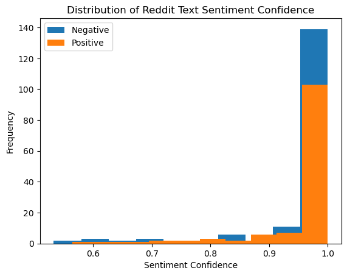

One of our main data science questions relates to public opinion regarding cannabis and psychosis. Specifically, these three research questions remain unaddressed in previous sections of our research:
What is the public sentiment regarding cannabis?
Does public sentiment indicate an awareness of the dangers of cannabis, especially as related to psychosis?
What is the public sentiment regarding cannabinoids such as CBD and THC products?
To answer these questions, we will perform sentiment analysis on the three subreddits we have been analyzing: r/Psychosis, r/schizophrenia, and r/weed. In this analysis, our main goal is to first determine whether the post mentions cannabis, psychosis, or both. We will then use a language model to determine the attitude of the post towards cannabis and psychosis.
Data Preparation
Since we are using a language model, we will need to use our original dataset. In the cleaning process, we removed stopwords, numbers, and other non-essential words. However, in order for a language model to work well, we actually want to keep every word in the post. These words provide context for the language model to model the relationships between words in the text.
Code
import pandas as pdimport jsonwithopen("../../data/raw_data/reddit_psychosis_data.json") as f: reddit_psychosis = json.load(f)withopen('../../data/raw_data/reddit_cannabis_data.json') as f: reddit_cannabis = json.load(f)withopen("../../data/raw_data/reddit_schizophrenia_data.json") as f: reddit_schizophrenia = json.load(f)
Now that we have our original dataset, we will need to create a new column that indicates whether the post mentions cannabis, psychosis, or both. We will use a list of keywords linked to cannabis and psychosis to determine whether the post mentions either of these topics. We will create a new column indicating whether each post mentions cannabis, psychosis, or both.
Code
cannabis_words = ['cannabis', 'weed', 'marijuana', '420', 'blunt', 'joint', 'high', 'stoned', 'smoke', 'smoking', 'üòÆ‚Äçüí®']schiz_words = ['schizophrenia', 'schizo', 'schizoaffective', 'schizotypal', 'schizoid', 'schiz', 'hallucination', 'delusion', 'psychosis', 'psychotic']def label_subreddit_cannabis(text):for word in cannabis_words:if word in text:returnTruereturnFalsedef label_subreddit_schiz(text):for word in schiz_words:if word in text:returnTruereturnFalsereddit_df['cannabis'] = reddit_df['full_text'].apply(label_subreddit_cannabis)reddit_df['schiz'] = reddit_df['full_text'].apply(label_subreddit_schiz)
Code
def label_subreddit(text):if label_subreddit_cannabis(text) and label_subreddit_schiz(text):return'both'elif label_subreddit_schiz(text):return'psychosis'elif label_subreddit_cannabis(text):return'cannabis'else:return'neither'reddit_df['label'] = reddit_df['full_text'].apply(label_subreddit)
from matplotlib import pyplot as pltreddit_df['label'].value_counts().plot(kind='bar')plt.title('Distribution of Reddit Text Labels')plt.xlabel('Label')plt.ylabel('Number of Reddit Posts')
I ruined my entire life and I’m only 23 I don’...
both
93
I stabbed my friend in Psychosis Already spent...
both
10053
Schizophrenics labeled “Karens” I keep seeing ...
both
We see that the majority of posts (65%) do not mention cannabis or psychosis. On the other end of the spectrum, 2% of posts mention both cannabis and psychosis. The remaining 33% of posts mention either cannabis or psychosis, with psychosis being mentioned more often than cannabis.
Sentiment Analysis
Now that we have labeled data, we want to perform sentiment analysis on the text. We are specifically interested in the sentiment of text that mentions both cannabis and psychosis, but we will analyze all the text data because samples that mention both are very limited.
To perform sentiment analysis, we will use the txtai library. We use sentence-transformers/nli-mpnet-base-v2, a high-quality, open source model for our sentence embeddings. Then, we use distilbert-base-uncased-finetuned-sst-2-english to perform sentiment analysis on the sentence embeddings. Both of these models are pre-trained on large datasets, so we can use transfer learning to apply them to our data. They are relatively light-weight and have high accuracy, so they are ideal for our purposes.
Code
from transformers import pipelinefrom txtai.embeddings import Embeddingssentiment_analyzer = pipeline("sentiment-analysis")embeddings = Embeddings(path="sentence-transformers/nli-mpnet-base-v2")text ="I love using txtai for natural language processing!"sentiment_result = sentiment_analyzer(text)[0]print(f"Sentiment: {sentiment_result['label']} (confidence: {sentiment_result['score']:.2f})")
No model was supplied, defaulted to distilbert-base-uncased-finetuned-sst-2-english and revision af0f99b (https://huggingface.co/distilbert-base-uncased-finetuned-sst-2-english).
Using a pipeline without specifying a model name and revision in production is not recommended.
Sentiment: POSITIVE (confidence: 1.00)
Code
for index, row in reddit_df.iterrows(): text = row['full_text']iflen(text) >512: text = text[:512]# Get the sentiment for the text sentiment_result = sentiment_analyzer(text)[0] reddit_df.loc[index, 'sentiment'] = sentiment_result['label'] reddit_df.loc[index, 'sentiment_confidence'] = sentiment_result['score']
Results
Code
reddit_df
text
title
subreddit
full_text
cannabis
schiz
label
sentiment
sentiment_confidence
0
3 years post-psychosis in recovery some days c...
first time smiling on camera in... 3 years!
Psychosis
first time smiling on camera in... 3 years! 3 ...
False
True
psychosis
POSITIVE
0.996600
1
I quit my meds lmfao
Psychosis
I quit my meds lmfao
False
False
neither
NEGATIVE
0.999569
2
I hate it here
Psychosis
I hate it here
False
False
neither
NEGATIVE
0.999582
3
art by me. I thought it kinda visualized how I...
Psychosis
art by me. I thought it kinda visualized how I...
False
False
neither
POSITIVE
0.990578
4
But I’m still god and this is neither a joke a...
Psychosis
But I’m still god and this is neither a joke a...
False
True
psychosis
POSITIVE
0.996085
...
...
...
...
...
...
...
...
...
...
20095
*sigh* Everything reminds me of her...
weed
*sigh* Everything reminds me of her...
False
False
neither
POSITIVE
0.999636
20096
r/nevertellmetheodds
weed
r/nevertellmetheodds
False
False
neither
NEGATIVE
0.950680
20097
I smoked weed in her basement üòÆ‚Äçüí®
weed
I smoked weed in her basement üòÆ‚Äçüí®
True
False
cannabis
NEGATIVE
0.995856
20098
smoke what?
weed
smoke what?
True
False
cannabis
NEGATIVE
0.993274
20099
I handle things better being delusional üòÖ
weed
I handle things better being delusional üòÖ
False
True
psychosis
NEGATIVE
0.995858
299 rows × 9 columns
Code
reddit_df['sentiment'].value_counts().plot(kind='bar')plt.title('Distribution of Reddit Text Sentiment')plt.xlabel('Sentiment')plt.ylabel('Number of Reddit Posts')
Text(0, 0.5, 'Number of Reddit Posts')
Code
reddit_df['sentiment_confidence'].plot(kind='hist')plt.title('Distribution of Reddit Text Sentiment Confidence')plt.xlabel('Sentiment Confidence')
Text(0.5, 0, 'Sentiment Confidence')
Code
# Visualize the distribution of sentiment confidence for each sentimentreddit_df[reddit_df['sentiment'] =='NEGATIVE']['sentiment_confidence'].plot(kind='hist')reddit_df[reddit_df['sentiment'] =='POSITIVE']['sentiment_confidence'].plot(kind='hist')plt.title('Distribution of Reddit Text Sentiment Confidence')plt.xlabel('Sentiment Confidence')plt.legend(['Negative', 'Positive'])plt.show()

Code
fig, axs = plt.subplots(2, 2, figsize=(10, 8))axs[0, 0].set_title('Neither')reddit_df[reddit_df['label'] =='neither']['sentiment'].value_counts().plot(kind='bar', ax=axs[0, 0])axs[0, 1].set_title('Cannabis')reddit_df[reddit_df['label'] =='cannabis']['sentiment'].value_counts().plot(kind='bar', ax=axs[0, 1])axs[1, 0].set_title('Psychosis')reddit_df[reddit_df['label'] =='psychosis']['sentiment'].value_counts().plot(kind='bar', ax=axs[1, 0])axs[1, 1].set_title('Both')reddit_df[reddit_df['label'] =='both']['sentiment'].value_counts().plot(kind='bar', ax=axs[1, 1])fig.suptitle('Distribution of Reddit Text Sentiment by Label')plt.tight_layout()plt.show()
Through visualization, it appears that the sentiment of text is more negative for posts that mention psychosis and/or cannabis than for posts that do not. It also appears that the sentiment of text is more negative for posts that mention cannabis than for posts that mention psychosis. In order to test these hypotheses, we will perform a chi-squared tests.
From our chi-squared text, we get a p-value of 0.001. This indicates that we have strong evidence to suggest that the sentiment of text is different for posts with different labels. Next, I would like to perform pairwise chi-squared tests to determine which labels are different from each other. This will help me analyze the difference between each label.
# Pairwise chi squared testsfrom itertools import combinationsfor label1, label2 in combinations(contingency_table.index, 2): contingency_table_new = pd.crosstab(reddit_df[reddit_df['label'].isin([label1, label2])]['label'], reddit_df[reddit_df['label'].isin([label1, label2])]['sentiment']) stat, p, dof, expected = chi2_contingency(contingency_table_new)print(f"Chi-squared test for {label1} and {label2}:")print(f"p-value: {p:.4f}")print()
Chi-squared test for both and cannabis:
p-value: 0.8338
Chi-squared test for both and neither:
p-value: 0.4576
Chi-squared test for both and psychosis:
p-value: 1.0000
Chi-squared test for cannabis and neither:
p-value: 0.0004
Chi-squared test for cannabis and psychosis:
p-value: 0.0711
Chi-squared test for neither and psychosis:
p-value: 0.0732
Conclusions
By performing the pair-wise chi-squared test, we are able to compare each label to each other label. We see that there is no evidence of a difference in sentiment between posts that mention both cannabis and psychosis and any other type of post. This indicates that posts that discuss both cannabis and psychosis are not more negative than posts that discuss only one of these topics or neither of these topics.
There is some evidence to suggest that posts that mention cannabis are more negative than posts that mention psychosis. However, the p-value is 0.0711, so the evidence is not very strong. There is also some evidence to suggest that posts that mention neither cannabis nor psychosis are more negative than posts that mention psychosis. However, the p-value is 0.0732, which is again not very strong evidence. This aligns with our visualization, which shows that posts that mention psychosis seem to be a bit more positive than posts that mention neither cannabis or both cannabis and psychosis.
This is strong evidence to suggest that posts that mention cannabis are more negative than posts that mention neither cannabis nor psychosis. This aligns with our visualization, which shows that posts that mention cannabis are much more negative than posts that mention neither cannabis nor psychosis. This is an interesting result, as we would expect posts mentioning cannabis on a subreddit dedicated to cannabis usage to generally consider cannabis usage to be positive. Below we visualize the subreddit distribution of posts mentioning cannabis:
Code
# Visualize the sentiment and the subreddit label# Use sentiment as the x axis and the subreddit as the hue# Make a plot for each labelimport seaborn as snssns.countplot(x='sentiment', hue='subreddit', data=reddit_df[reddit_df['label'] =='cannabis'])plt.title('Distribution of Sentiment by Subreddit Label for Cannabis')plt.show()
/Users/mariongeary/anaconda3/envs/dsan5800/lib/python3.9/site-packages/seaborn/_oldcore.py:1498: FutureWarning: is_categorical_dtype is deprecated and will be removed in a future version. Use isinstance(dtype, CategoricalDtype) instead
if pd.api.types.is_categorical_dtype(vector):
/Users/mariongeary/anaconda3/envs/dsan5800/lib/python3.9/site-packages/seaborn/_oldcore.py:1498: FutureWarning: is_categorical_dtype is deprecated and will be removed in a future version. Use isinstance(dtype, CategoricalDtype) instead
if pd.api.types.is_categorical_dtype(vector):
/Users/mariongeary/anaconda3/envs/dsan5800/lib/python3.9/site-packages/seaborn/_oldcore.py:1498: FutureWarning: is_categorical_dtype is deprecated and will be removed in a future version. Use isinstance(dtype, CategoricalDtype) instead
if pd.api.types.is_categorical_dtype(vector):
/Users/mariongeary/anaconda3/envs/dsan5800/lib/python3.9/site-packages/seaborn/_oldcore.py:1498: FutureWarning: is_categorical_dtype is deprecated and will be removed in a future version. Use isinstance(dtype, CategoricalDtype) instead
if pd.api.types.is_categorical_dtype(vector):
From our visualization, we see that cannabis usage is mentioned on both the r/weed subreddit and the r/schizophrenia subreddit. However, while cannabis usage is mentioned in both positive and negative lights on r/weed, it is only mentioned in a negative light on r/schizophrenia. This is likely the reason why posts mentioning cannabis are more negative than posts mentioning neither cannabis nor psychosis.
Code
import seaborn as snsimport matplotlib.pyplot as pltlabel_order = ['both', 'psychosis', 'cannabis', 'neither']fig, axs = plt.subplots(1, 3, figsize=(15, 5))reddit_weed_plot = reddit_df[reddit_df['subreddit'] =="weed"].groupby(['label', 'sentiment']).size().reset_index().pivot(columns='label', index='sentiment', values=0)reddit_weed_plot.plot(kind='bar', stacked=True, ax = axs[0])axs[0].set_title('Distribution of Sentiment by r/weed')reddit_schizophrenia_plot = reddit_df[reddit_df['subreddit'] =="schizophrenia"].groupby(['label', 'sentiment']).size().reset_index().pivot(columns='label', index='sentiment', values=0)reddit_schizophrenia_plot.plot(kind='bar', stacked=True, ax = axs[1])axs[1].set_title('Distribution of Sentiment by r/schizophrenia')reddit_psychosis_plot = reddit_df[reddit_df['subreddit'] =="Psychosis"].groupby(['label', 'sentiment']).size().reset_index().pivot(columns='label', index='sentiment', values=0)reddit_psychosis_plot.plot(kind='bar', stacked=True, ax = axs[2])axs[2].set_title('Distribution of Sentiment by r/Psychosis')
Text(0.5, 1.0, 'Distribution of Sentiment by r/Psychosis')
Based on this analysis, we see that there is not significant difference in sentiment between the different subreddits. This supports our evidence that the contents of the posts is a bigger indicator of sentiment irrespective of the subreddit.
Conclusion
We see that posts mentioning cannabis are more negative than posts mentioning neither cannabis nor psychosis. This is likely due to the fact that cannabis is mentioned in a negative light on the r/schizophrenia subreddit. We also see that posts mentioning psychosis are more positive than posts mentioning neither cannabis nor psychosis. This is likely due to the fact that psychosis is mentioned in a positive light on the r/schizophrenia subreddit. Visually, we see that r/weed tends to have a more negative sentiment that the other two subreddits, but there is not strong statistical evidence to support this claim.
This analysis brings insight into our questions about sentiment regarding cannabis usage and psychosis. First, we see that cannabis usage is seen in a more negative light, even in spaces that we would expect to support cannabis usage, like r/weed. Next, we observe that there is some evidence to show that posts mentioning psychosis are actually more positive than those not mentioning psychosis, which is somewhat surprising. This is likely because r/Psychosis and r/schizophrenia are encouraging spaces meant to support those suffering from psychosis and working towards recovery. Finally, we see that posts mentioning both cannabis and psychosis are not more negative than other posts. There are also very few posts that mention both cannabis and psychosis. These may indicate that the public is not aware of the link between cannabis and psychosis, which aligns with my hypothesis. However, we cannot make any strong conclusions about this because there are so few posts that mention both cannabis and psychosis.